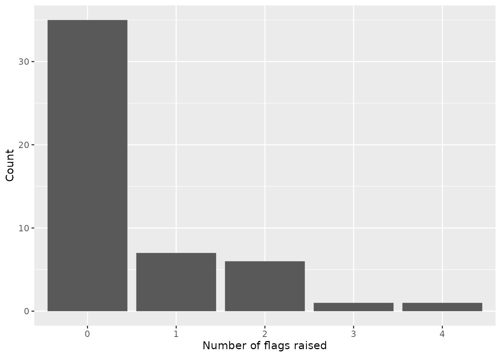
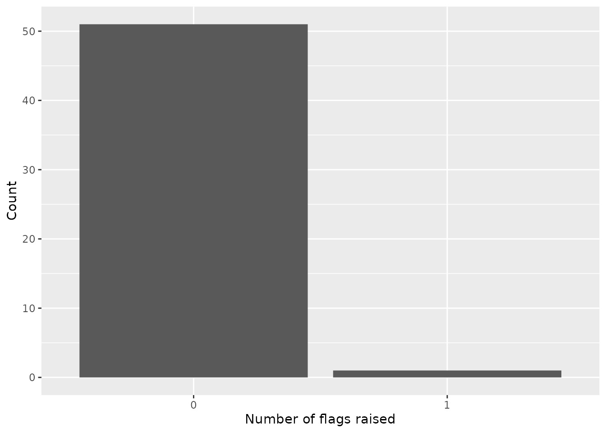

Basic Usage
basic-usage.RmdOverview
The rplanes package (plausibility
analysis of epidemiological
signals) provides functionality to prepare data and
analyze plausibility of both forecasted and observed epidemiological
signals. The functions implement a set of plausibility algorithms that
are agnostic to geographic and time resolutions and are calculated
independently and then presented as a combined score. The package allows
users to:
- Prepare signal data (either forecast or observed) to be evaluated
- Create a set of baseline characteristics for previously observed data
- Compare those characteristics to the evaluated data for each location
- Synthesize individual component results into an overall score
The package workflow is demonstrated in detail below (see Figure 1).
Figure 1: Workflow of the rplanes package
Figure 1 provides a detailed description of the
workflow used in rplanes. The rplanes
processing begins with forecast or observed data prepared in a
pre-specified format. The required input data format is documented in
the package. For convenience, the package includes the
read_forecast() function to prepare forecast data that is
in the quantile format commonly used in forecasting hubs. The prepped
forecast or observed data is then converted to a signal object using
to_signal(). The signal data will be compared against
baseline characteristics for previously observed data at each location.
These characteristics are aggregated using plane_seed().
With the seed and the signal data prepared, the user can run the
plausibility scoring independently for each location in the evaluated
data. Scores are comprised of individual binary plausibility components.
The functions that drive each component are wrapped in the
plane_score() function for ease-of-use. By default the
plane_score() wrapper will try to use all relevant
components, however the user can dictate specific components as needed.
It is important to note that depending on the type of signal to be
evaluated (i.e., forecast versus observed data), some components may not
apply.
Analyzing plausibility of forecast data
Plausibility analysis can support operational forecasting and
outbreak analytic activities. Here we demonstrate how to use
rplanes to score an example forecasted data set.
Several packages must be loaded to prior to conducting the analysis:
Prepare observed data
To motivate this example we will use incident flu hospitalization
reported via HHS
Protect. Note that the data here has been aggregated from daily to
weekly resolution, and is provided in this format as internal
rplanes package data. We select only the columns in which
we’re interested (“date”, “location”, and “flu.admits”) and make sure
that the date field is formatted as a date:
hosp_all <-
read.csv(system.file("extdata/observed/hdgov_hosp_weekly.csv", package = "rplanes")) %>%
select(date, location, flu.admits) %>%
mutate(date = as.Date(date))
head(hosp_all)| date | location | flu.admits |
|---|---|---|
| 2022-02-12 | US | 1256 |
| 2022-02-19 | US | 1573 |
| 2022-02-26 | US | 1666 |
| 2022-03-05 | US | 1942 |
| 2022-03-12 | US | 2247 |
| 2022-03-19 | US | 2878 |
It is important to emphasize that the observed data must at minimum include columns for location (geographic unit such as FIPS code), date (date of reported value; must be date class), and a reported value for each location/date combination.
Convert observed data into a signal with
to_signal()
The downstream plausibility analysis requires that observed and/or
forecasted data be converted to an S3 “signal” class. The
to_signal() function constructs this object and applies an
additional “observed” or “forecast” class depending on the type of
signal specified.
Here we will convert the observed data from above to a signal object:
observed_signal <- to_signal(input = hosp_all, outcome = "flu.admits", type = "observed", resolution = "weeks", horizon = NULL)Create a seed from the observed data via
plane_seed()
The plane_seed() function provides a means to internally
calculate and store baseline characteristics for the observed data in
what the package calls a “seed”. These characteristics are summarized
independently for each location, and are then used in downstream scoring
functions.
In this example, we input the prepped observed signal object and make
use of the “cut_date” argument. By restricting to dates on or before the
specified cut date, we ensure that the baseline characteristics are not
computed based on data that overlaps with the forecast. In practice, it
may be possible to use the default (NULL) cut date when
analyzing forecasts, so long as the reported data is available up to
(and not exceeding) the first horizon of the forecast.
prepped_seed <- plane_seed(observed_signal, cut_date = "2022-10-29")Prepare forecast data
The forecast data to be assessed must include a point estimate and
some representation of uncertainty (i.e., prediction interval) for each
location and horizon. For analysis in rplanes, the forecast
data must be prepared to include the following:
-
location: Geographic unit such as FIPS code -
date: Date corresponding the forecast horizon -
horizon: Forecast horizon -
lower: Lower limit of a given prediction interval for the forecast -
point: Point estimate for the forecast -
upper: Upper limit of a given prediction interval for the forecast
For convenience, the rplanes package includes
read_forecast() to convert forecasts from a quantile format
used by many forecast hubs1,2 into the format needed
for plausibility analysis. The read_forecast() function
reads csv input and returns a tibble with summarized
forecast data for each location and horizon in the original file.
For this example, we use a forecast of incident weekly flu
hospitalizations. This forecast is originally in the quantile format
referenced above and is included in rplanes as example
data:
forecast_fp <- system.file("extdata/forecast/2022-10-31-SigSci-TSENS.csv", package = "rplanes")
read.csv(forecast_fp) %>%
head(.)| forecast_date | target | target_end_date | location | type | quantile | value |
|---|---|---|---|---|---|---|
| 2022-10-31 | 1 wk ahead inc flu hosp | 2022-11-05 | 02 | point | NA | 6 |
| 2022-10-31 | 2 wk ahead inc flu hosp | 2022-11-12 | 02 | point | NA | 5 |
| 2022-10-31 | 3 wk ahead inc flu hosp | 2022-11-19 | 02 | point | NA | 5 |
| 2022-10-31 | 4 wk ahead inc flu hosp | 2022-11-26 | 02 | point | NA | 5 |
| 2022-10-31 | 1 wk ahead inc flu hosp | 2022-11-05 | 02 | quantile | 0.01 | 0 |
| 2022-10-31 | 2 wk ahead inc flu hosp | 2022-11-12 | 02 | quantile | 0.01 | 0 |
We can use read_forecast() to load the data and convert
to the required format:
prepped_forecast <- read_forecast(forecast_fp)
head(prepped_forecast)| location | date | horizon | lower | point | upper |
|---|---|---|---|---|---|
| 02 | 2022-11-05 | 1 | 0 | 6 | 11 |
| 02 | 2022-11-12 | 2 | 0 | 5 | 12 |
| 02 | 2022-11-19 | 3 | 0 | 5 | 12 |
| 02 | 2022-11-26 | 4 | 0 | 5 | 12 |
| 04 | 2022-11-05 | 1 | 13 | 58 | 103 |
| 04 | 2022-11-12 | 2 | 9 | 68 | 127 |
Convert forecast data into a signal with
to_signal()
With the forecast formatted appropriately, we can convert it to a signal object:
Run plane_score() and visualize results
The planes_score() function wraps PLANES scoring for
plausibility components across all locations in a single step. The
function can accept arguments to specific component functions and allows
the user to dictate which components to use (with a default to all). For
more about these arguments see ?plane_score.
We pass the input forecast signal to the function along with the prepped seed to run the scoring independently at all locations:
scores <- plane_score(input = forecast_signal, seed = prepped_seed)Note that if we had other forecasts to evaluate for the same time period, we could prepare each forecast signal appropriately and use the same seed (i.e., we would not have to recreate the seed for each forecast).
The output of plane_score() is a list of scoring results
for all locations. We can convert the scores_summary
element from that list to a tibble. The res
object below shows the location, the number of flags raised (“n_flags”),
the number of components tested (“n_components”), the “score” (which is
“n_flags” divided by “n_components”), the names of components tested,
and the names of the components that were flagged (if any):
| location | n_flags | n_components | score | components | flagged |
|---|---|---|---|---|---|
| 02 | 1 | 5 | 0.2 | cover;diff;repeat;taper;trend | cover |
| 04 | 0 | 5 | 0.0 | cover;diff;repeat;taper;trend | NA |
| 05 | 0 | 5 | 0.0 | cover;diff;repeat;taper;trend | NA |
| 06 | 0 | 5 | 0.0 | cover;diff;repeat;taper;trend | NA |
| 08 | 0 | 5 | 0.0 | cover;diff;repeat;taper;trend | NA |
| 09 | 3 | 5 | 0.6 | cover;diff;repeat;taper;trend | cover;diff;repeat |
res %>%
count(score) %>%
mutate(score = as.character(score)) %>%
ggplot(aes(score,n)) +
geom_col() +
labs(x = "Score", y = "Count")
For the evaluated forecast, most of the locations had one or fewer of the flags raised. However, several locations had two or three of the five possible components flagged for implausibility.
Analyzing plausibility of observed data
One might want to test observed or reported data for plausibility to
check for phenomena like backfill or systematic errors in reporting
mechanisms. The steps to use rplanes to analyze
plausibility of observed data are very similar to forecast assessments.
The input data must be converted to a signal, which is passed (along
with a seed) to the scoring function. However, the key difference is
that for observed data the same data source used to create the input
signal can be used for seeding, albeit with a cut date to differentiate
data to be evaluated from baseline.
Prepare observed data
For this example, we will also use the reported HHS Protect flu hospitalization data. However, we will truncate this data to stop at the end of 2022. In this scenario, we will be interested in assessing the most recent reported week (i.e., the week of 2022-12-31) for plausibility.
Note that in practice, it may be of interest to assess multiple time points for recently observed data.
To begin, we will read in the data and filter it to dates prior to 2023:
hosp_pre23 <-
read.csv(system.file("extdata/observed/hdgov_hosp_weekly.csv", package = "rplanes")) %>%
select(date, location, flu.admits) %>%
mutate(date = as.Date(date)) %>%
filter(date < as.Date("2023-01-01"))
head(hosp_pre23)| date | location | flu.admits |
|---|---|---|
| 2022-02-12 | US | 1256 |
| 2022-02-19 | US | 1573 |
| 2022-02-26 | US | 1666 |
| 2022-03-05 | US | 1942 |
| 2022-03-12 | US | 2247 |
| 2022-03-19 | US | 2878 |
Convert observed data into a signal with
to_signal()
With the data loaded, we can convert the hospitalization
tibble to a signal object:
observed_signal <- to_signal(input = hosp_pre23, outcome = "flu.admits", type = "observed", resolution = "weeks", horizon = NULL)Create a seed from the observed data via
plane_seed()
We can use the observed the signal as the input to
plane_score(), but also as the input to
plane_seed(). However, to do so we must use an argument
that restricts the seeding to only dates prior to the cut date
(inclusive).
In this example, because we are assessing the observed data for the week of 2022-12-31 we would want to seed our plausibility analysis with characteristics up through the most recent reported date (i.e., 2022-12-24):
prepped_seed <- plane_seed(observed_signal, cut_date = "2022-12-24")Run plane_score() and visualize results
As with the forecast assessments, the PLANES scoring is wrapped for
convenience in the plane_score() function. Since we are
assessing an observed signal in this case, we can explicitly tell the
scoring to use certain components. It is important to emphasize that not
all components will work for both forecasts and observed signals:
scores <- plane_score(observed_signal, seed = prepped_seed, components = c("repeat","diff"))| location | n_flags | n_components | score | components | flagged |
|---|---|---|---|---|---|
| 01 | 0 | 2 | 0 | diff;repeat | NA |
| 02 | 0 | 2 | 0 | diff;repeat | NA |
| 04 | 0 | 2 | 0 | diff;repeat | NA |
| 05 | 0 | 2 | 0 | diff;repeat | NA |
| 06 | 0 | 2 | 0 | diff;repeat | NA |
| 08 | 0 | 2 | 0 | diff;repeat | NA |
res %>%
count(score) %>%
mutate(score = as.character(score)) %>%
ggplot(aes(score,n)) +
geom_col() +
labs(x = "Score", y = "Count")
These results indicate that there is just one location for which any flag has been raised. Again, in this case only two components are used for scoring so the results should be interpreted accordingly. Furthermore, we have to consider that for reported signals the date at which the observed data is retrieved is paramount. It will likely be most meaningful to analyze plausibility of observed data in real time (or near real time) as opposed to retrospectively, since backfill and reporting issues may be corrected prior to assessment.